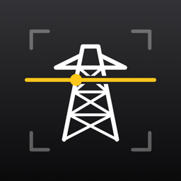

PhonePASS鉄塔の正面図をカメラに重ねて、
弛度観測のバテと基準線を表示する iPhone アプリ
1:1・mm の鉄塔正面図（DXF）を読み込み、カメラの映像に重ねて表示します。文字や寸法もそのまま表示します。
鉄塔の節点を手がかりに映像の揺れを測り、図面とバテを鉄塔に張り付けたまま表示します。
基準の節点から鉛直に何 mm 下（上）かでバテを登録し、そこから何 mm の点線を出します。
図面がなくても、スマホの傾きから水平線を出し、既知の寸法を基準にオフセット線を表示できます。
PhonePASS は観測を補助する道具です。測定結果は、従来の方法による確認とあわせてご利用ください。